どんなゲーム？
日にちは 7日周期 で進みます。Day 1〜6 は準備期間で、7日目の夜が 血の月 です。血の月には侵略者が何波も押し寄せ、夜明けまでネクサスが残れば勝ち です。
侵略者はプレイヤーより ネクサスを優先して狙い、行く手の壁を殴って壊します。勝つたびにネクサスが強くなり、次の血の月はもっと厳しくなります。
参加のしかた
Minecraft Java Edition 26.2 を用意します。統合版では入れません。
サーバーのアドレスは 配信の中で案内します。マルチプレイの「サーバーを追加」に入力して接続してください。
サーバーに入った時点で、自動で参加者になります。 コマンドを打つ必要はありません。
ルール説明は、配信の概要欄か固定コメントにあります。ゲーム内で次のコマンドを打つと URL が表示されます。
/rule
ゲームが始まるまで
配信者がネクサスを起動するまでは「待機中」です。待機中は次のようになります。
- ネクサスが置かれるまでは自由に歩けるネクサスが置かれると全員がネクサスのそばへテレポートし、そこからゲーム開始までは、ネクサスから 48 ブロックより先には進めません（ネザーゲートなども使えません）。境目に近づくと紫の粒が見えます。
- 壊す・置く・拾う・落とす・開ける・攻撃する、ができないブロックの破壊と設置、アイテムを拾う・落とす、チェストや作業台を開ける、ボタン・レバー・感圧板などのレッドストーン部品、Mob や動物への攻撃は、開始まで止めています。
- 死なない体力と満腹度が常に回復します。
画面下に、いまの参加人数とルールの案内が出ます。ゲームが始まるとチャットに「ゲーム開始！」と出て、制限はすべて解除されます。ゲームを始められるのは配信者（運営）だけです。
まずやること
| やること | どうやって |
|---|---|
| 状況を確認する | 画面右のサイドバーに Day・血の月までの日数・日没と次の Day までの残り時間・襲撃中の侵略者の数・拠点にいる人数・ネクサスの HP・自分の Shard が出ます。遠出していても、ネザーにいても出ます。残り 1 分を切ると赤い秒数になります |
| お金（Shard）を集める | 侵略者を倒すと Shard（アメジストの欠片）を落とします。普通のゾンビやスケルトンなども 1 個落とします（スポナーから出た敵は落としません）。拾ってインベントリに入れておくだけで使えます |
| 拠点に戻る | ネクサスは紫に光っていて、壁越しでも見えます。拠点（ネクサスから 48 ブロック）の外にいると、画面下にネクサスの方向（矢印）と距離が出ます |
| 素材を集める | 準備期間は普通のマイクラと同じです。鉄・レッドストーン・矢・雪玉などがタレットや弾薬になります |
| 配信者の指示を聞く | どこに壁を作るか、誰が何を担当するかは配信者が決めます |
役割の例
全員が同じことをするより、分担したほうが守りやすくなります。どの役割でも報酬はちゃんともらえます。
| 役割 | やること | 使うもの |
|---|---|---|
| 前衛 | 壁際やネクサスに張り付いた敵を倒す | 武器・救急キット・閃光弾 |
| 建築・強化 | 壁を作り、強化ハンマーで硬くする | 強化ハンマー・Shard |
| 修理 | 血の月の最中に、削られた壁を直す | 強化ハンマー・応急補修キット |
| タレット係 | タレットを置き、弾薬を切らさない | 矢・ブレイズパウダー・雪玉・レッドストーン |
| 補給 | 空中投下を拾いに行く、素材を集める | — |
強化ハンマー
ハンマー（鉄の斧の見た目）でブロックを右クリックすると硬くなります。木枠 → 補強木材 → 石積み → 鉄筋コンクリート → 鋼鉄 の順に上がり、1段階ごとに Shard を使います。傷んだブロックを右クリックすると修理、スニークしながら右クリック で耐久の確認です。
帰還の羅針盤
右クリックして 7 秒動かずに待つと、どこからでもネクサスのそばへ戻れます。ネザーやエンドからでも、血の月の最中でも使えます。動いたりダメージを受けたりすると中断します（羅針盤は減りません）。使うとなくなります。
ゲームが始まったときに 1 人 1 個もらえます（あとから入った人も 1 個）。ネクサスの画面で 10 Shard で買えるほか、作業台で鉄インゴット 5 個と紙 3 個（並べ方は自由）でも作れます。
ネクサス内の Shard（みんなの共有）
Shard を手に持ってネクサスを右クリック すると、その束をネクサスに預けられます。ネクサスの画面の「Shard をネクサスに預ける」を押すと、持っている Shard を全部預けます。預けた分は画面右のサイドバーに「ネクサス内の Shard」として出ます。
強化・修理・アップグレードで払うときは、まず自分の Shard を使い、足りない分が自動でネクサス内の Shard から払われます。預けた Shard を引き出せるのは配信者（管理者）だけです。
タレット
置いたあと、弾薬を手に持って右クリック で装填します。射撃は矢、火炎はブレイズパウダー、凍結は雪玉、修復はレッドストーンです。素手で右クリックすると残弾が見られます。
作れるもの
このゲームの道具は作業台で作れます。左の 3×3 に材料を置くと、右に完成品が出ます。数字は 1 回で作れる数です。
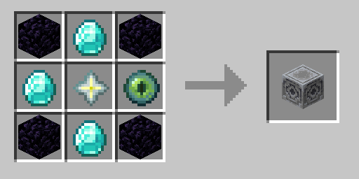
黒曜石×4、ダイヤ×3、ネザースター×1、エンダーアイ×1
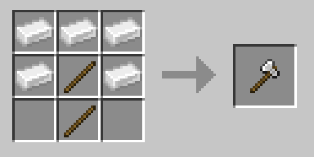
鉄インゴット×5、棒×2
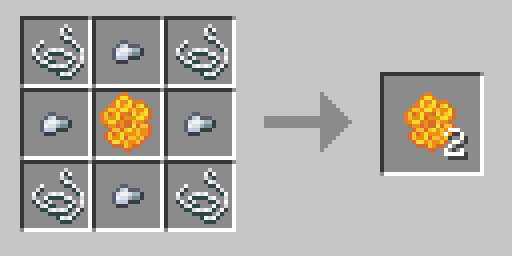
糸×4、鉄ナゲット×4、ハニカム×1
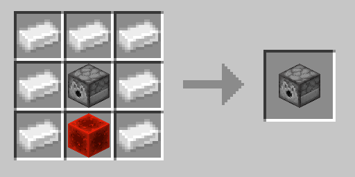
鉄インゴット×7、ディスペンサー×1、レッドストーンブロック×1
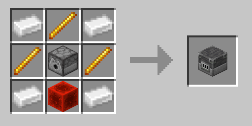
鉄インゴット×4、ブレイズロッド×3、ディスペンサー×1、レッドストーンブロック×1
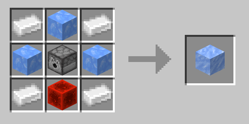
鉄インゴット×4、青氷×3、ディスペンサー×1、レッドストーンブロック×1
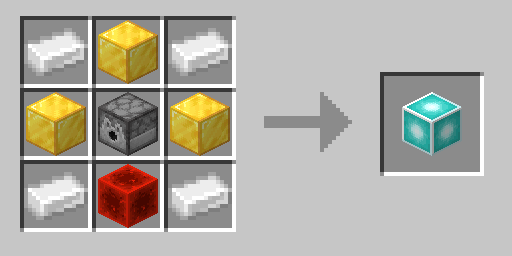
鉄インゴット×4、金ブロック×3、ディスペンサー×1、レッドストーンブロック×1
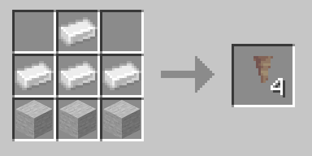
鉄インゴット×4、石×3
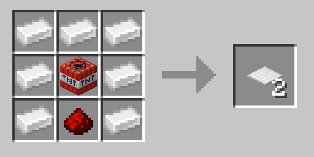
鉄インゴット×7、TNT×1、レッドストーン×1
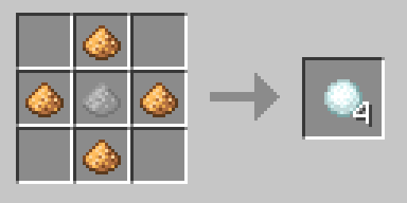
グロウストーンダスト×4、火薬×1
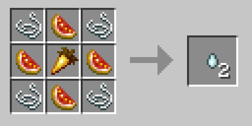
糸×4、輝くスイカの薄切り×4、金のニンジン×1
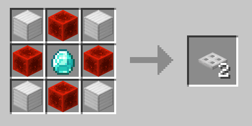
鉄ブロック×4、レッドストーンブロック×4、ダイヤ×1
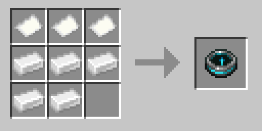
鉄インゴット×5、紙×3
血の月の戦い方
7日目は昼過ぎ・夕方・日没直前の3回、警告が出ます。日没までに持ち場についてください。画面上のボスバーに、ウェーブ数・残りの敵・ネクサスの HP が出ます。
ネクサスが攻撃されると、どこにいても画面の真ん中に「ネクサスが攻撃されている！」と出て、警報が鳴ります。急いで戻ってください。Day 1・Day 2 は夜の襲撃も叫喚体も来ません（来るのは弱いゾンビの小さな群れだけ）。
- 5 波目と 10 波目にボスが出るボスごとに必要な対策（壁の厚み・屋根・火力など）が違います。ボスの HP は画面上のボスバーに出ます。攻撃した侵略者は、頭の上に数秒だけ HP が出ます。
- 回復役と強化役から倒す蘇生者（味方を回復）と守護者（味方を硬くする）を残すと、前線が崩れなくなります。
- 壁に穴が開いたら緊急バリア右クリックした面に、鋼鉄並みの壁を 45 秒だけ張れます。
- サーバーにいる（どこにいても大丈夫です）
- 生きている（リスポーン待ちだともらえません）
Shard は、倒した数だけでなく 壁の修理・強化、タレットや罠の設置、攻撃を受け止めた量 でも多くもらえます。パークポイントは /invasion perks で使い、自分を強化できます。
死んでしまったら
どこで死んでも、持ち物は死んだ場所の 墓（自分の頭） にまとめられます。座標がチャットに出るので取りに行ってください。墓は右クリックでも左クリックでも回収できます。
- 死んでから 10 分間は自分しか回収できない10 分を過ぎると、だれでも回収できるようになります。墓は回収されるまで消えません。
- 仲間に頼むこともできる10 分の間に他の人が墓をクリックすると、あなたのチャットに「許可する」「断る」のボタンが出ます（60 秒以内）。許可すると、その人が代わりに回収できます。
参加者のマナー
配信者が別のルールを出している場合は、そちらを優先してください。
- 他の人の建物や拠点を壊さない拠点の壁を作り直すときは配信者に相談してください。
- ネクサスの報酬は勝手に受け取らない「報酬を受け取る」は誰でも押せますが、全部まとめて1人に入ります。配信者の指示で受け取ってください。
- 拠点の近くで大量に採掘しない拠点での採掘・建築・戦闘は「ヒート」として溜まり、溜まりすぎると仲間を呼ぶ叫喚体が出ます。サイドバーのヒートが赤くなったら一度手を止めてください。
- 血の月の最中に勝手に持ち場を離れない抜けるときはチャットで一声かけてください。
参加者が使えるコマンド
/invasion は /inv と短く打てます。
| コマンド | 内容 |
|---|---|
/invasion status | 近くのネクサスの状態と、自分の Shard 所持数 |
/rule | ルール説明の URL を表示する |
/bug | バグ報告・意見のフォームを開く（/issues でも同じ） |
/patchnote | 最新のパッチノート（更新情報）を開く |
/invasion join | 防衛に参加する（サーバーに入った時点で自動で参加しているので、普段は不要） |
/invasion leave | 防衛から抜ける |
/invasion perks | パーク画面を開く |
/invasion top | 血の月の踏破ランキング |
よくある質問
ブロックが置けない・壊せない
稼働中のネクサスは壊せません。それ以外で置けない場合は配信者に伝えてください（サーバーの保護設定の可能性があります）。
侵略者を倒したのに Shard が増えない
Shard はアイテムとして落ちます。拾ってインベントリに入れてください。
血の月に勝ったのに Shard がもらえなかった
夜明けの瞬間に拠点から離れていたか、死んでいた可能性があります。
強化ハンマーが使えない
ネクサスから 48 ブロック以内でしか使えません。Shard が足りない場合も使えません。
タレットが撃たない
弾薬が入っていないかもしれません。素手で右クリックすると残弾が見られます。
バグ報告・意見を送る
おかしな動きを見つけたときや、「こうなったらいいのに」という意見は、GitHub の Issue から送ってください。送るには GitHub のアカウント（無料）が必要です。
| フォーム | こんなとき |
|---|---|
| バグ報告 | 思った通りに動かない・おかしな動きをした |
| バランスの意見 | 強すぎる・弱すぎる・難しすぎると感じた |
| 要望・アイデア | こうなったら面白い・これを追加してほしい |
| 遊び方の質問 | 遊び方やルールがわからない |
| 感想・その他 | 遊んでみた感想、上のどれにも当てはまらない意見 |
送ったあとの状態
Issue に付いているラベルで、今どうなっているかがわかります。
| ラベル | 意味 |
|---|---|
| 状態: 確認待ち | まだ開発者が読んでいない |
| 状態: 情報がほしい | 詳しく教えてほしいことがある。コメントを見てください |
| 状態: 確認済み | 開発者が確認した。直す・取り入れる予定 |
| 状態: 対応中 | いま直している・作っている |
| 状態: 次回反映 | 対応済み。次の配信のサーバーから反映される |
| 重複 | 同じ内容の報告がすでにある（そちらで対応します） |
| 見送り | 仕様どおり、または今回は対応しない |
もっと詳しく
敵とボスの一覧、ネクサスのアップグレード、パークの全効果、クラフトレシピ（3×3 の配置図つき）は 遊び方ガイド にまとめています。
更新で何が変わったか、どのバグを直したかは パッチノート にまとめています。